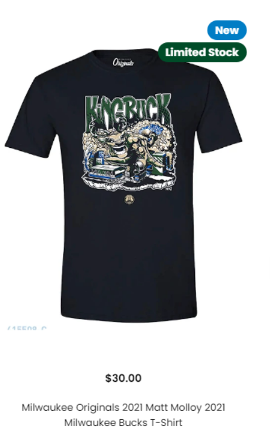

Giannis Sina Ugo Antetokounmpo
 Milwaukee Bucks win the 2020-21 NBA championship.With more infos,see at https://en.wikipedia.org/wiki/Giannis_Antetokounmpo
Milwaukee Bucks win the 2020-21 NBA championship.With more infos,see at https://en.wikipedia.org/wiki/Giannis_Antetokounmpo
Profile:
No. 34 – Milwaukee Bucks
NBA draft 2013
Round: 1 / Pick: 15th overall
Selected by theMilwaukee Bucks
Playing career in the NBA:2013–present
Title:
videos
jersey&shoes